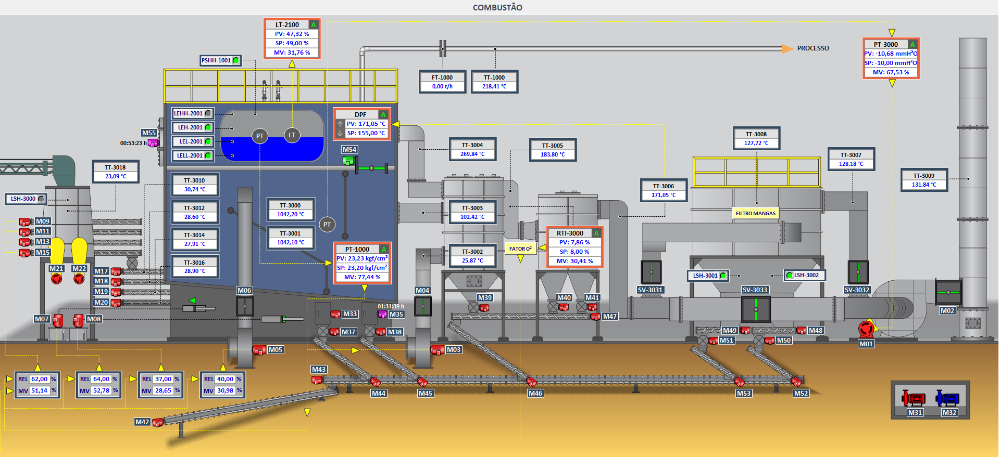

Caldeiras & Aquecedores Térmicos
App integrado + fornecimento de CLP para monitoramento e controle de caldeiras e aquecedores térmicos. Temperatura, pressão, consumo de vapor, eficiência energética e conformidade com normas de segurança operacional.
Telas de Controle
